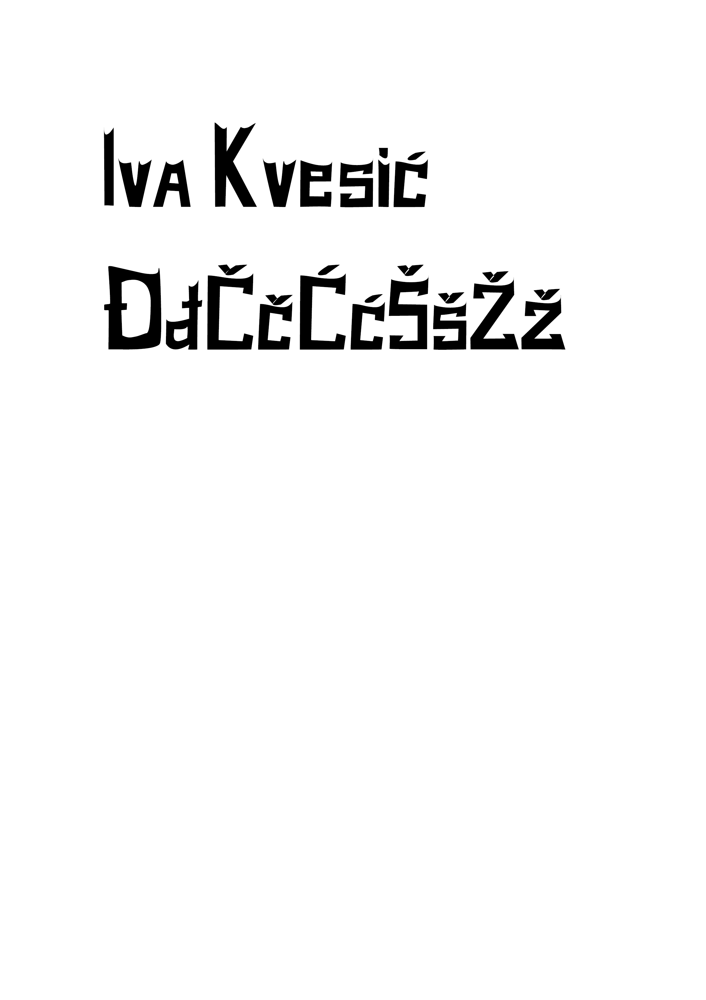
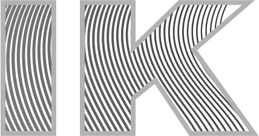
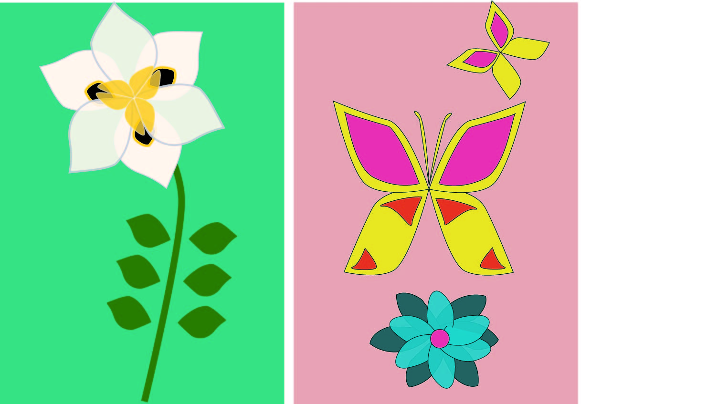
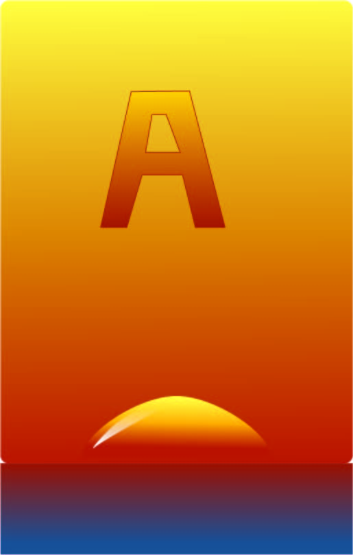

U prvoj vježbi bavili smo se manipulacijom fonta i pravili smo vlastiti font pomoću uređivanja slovnih znakova. Mogli smo birati u kojem programu radimo, u Fontographer ili Fontoforge. Oba programa rade na isti princip te su manje - više slični.
U drugoj vježbi učili smo crtati Bezierove krivulje u koordinatnom sustavu. Bezierova krivulja je parametarska krivulja definirana sa 4 točke i predstavlja temelj današnje vektorske grafike.
U trećoj vježbi smo crtali objekte poput cvjetova i leptira te na njima isprobavali razne alate i tehnike kopiranja, apliciranja boja, rotacije, scale, transparenciju, multipliciranje oblika...
U četvrtoj vježbi smo obrađivali izradu složenih elemenata i objekata koji se sastoje od više staza metodama spajanja ili oduzimanja oblika. Također, aplicirali smo razne vrste gradijenata od dvije ili više boja, te aplicirali transparenciju i poredak slova.
